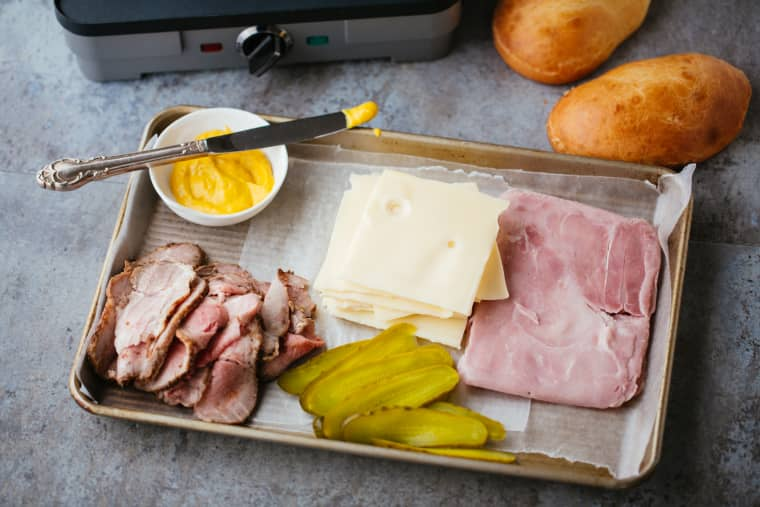

How to make the sandwich
Step 1
Cut your Publix Cuban bread in half, and spread mustard and mayonnaise on the sides.
Step 2
Then, cut fine slices of Swiss cheese, ham and pork in exactly that order onto the bread.Place a few pickles and put the two breads together, then brush the tops with melted butter.
Step 3
Place it on a sandwich press if possible. If not, grab a spatula, press it and heat it up in a microstove for 5-8 minutes.
Step 4
While Waiting, flip them once for even browning. Finally, slice them diagonally and serve hot with a side of tiny fries.
Step 5
Light up a stoagie and enjoy your sandwich, meng!